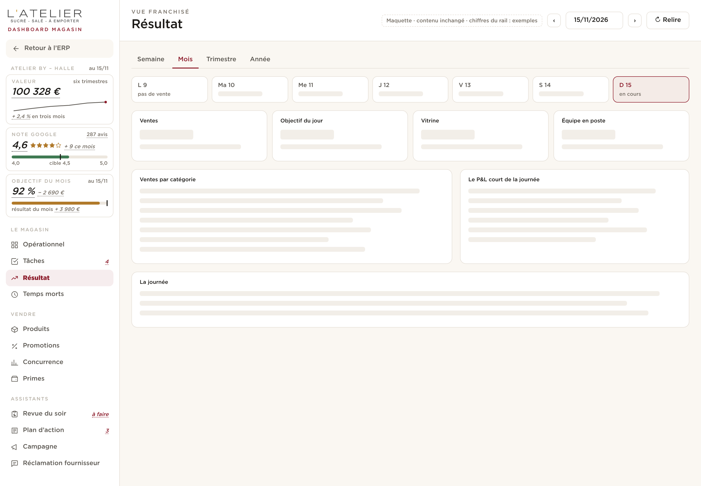
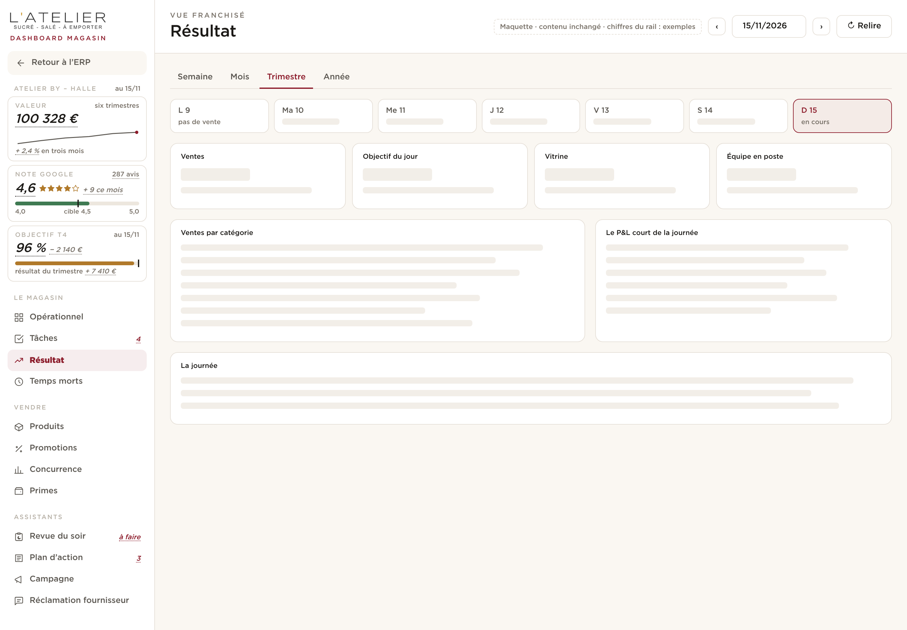
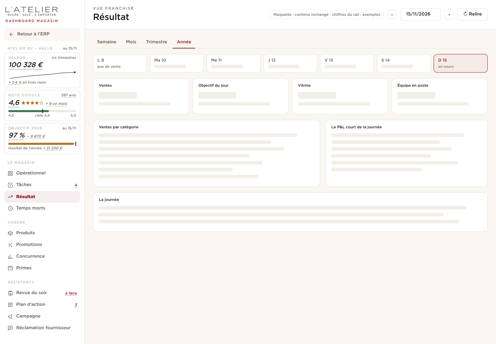

Opérationnel (et tout écran hors Résultat)
l’objectif du jour
Résultat › Semaine
l’objectif de la semaine
Résultat › Mois
l’objectif du mois

Résultat › Trimestre
l’objectif du trimestre

Résultat › Année
l’objectif de l’année
